No browser support!
No browser support!
No browser support!





Параметры нового обьекта:
Цвет:
Случайный цвет:
Масса:
По часовой:
Клик - круговая орбита:
Неподвижный:
Пауза при создании объекта:
Родительский обьект:
Выбрать
Множитель
скорости запуска:
Параметры прощета траекторий:
Прощет траекторий:
Дальность прощета траектории
(влияет на быстродействие):
Точность прощета траектории %
(влияет на быстродействие):
Показывать рассояние:
Параметры удаления обьекта:
Удалить ближайший к курсору обьект:
Удалить дальний от курсора обьект:
Удалить последний добавленный обьект (Ctrl+Z):
Редактиование свойств обьекта:
Выбрать объект
Цвет:
Масса:
Неподвижный:
Обнулить скорость
Горячие клавиши:
• H - Меню помощи.
• С - Перейти в меню создания обьектов.
• D - Перейти в меню удаления обьектов.
• E - Перейти в меню редактирования объектов.
• "<" - Замедлить время.
• P - Пауза\Старт.
• "/" - Восстановить течение времени по умолчанию.
• ">" - Ускорить время.
• M - Переместить обьект.
• T - Перейти в меню вида траекторий.
• V - Перейти в меню камеры.
• S - Перейти в меню настроек.
• F - Перейти в меню настроек взаемодействий.
• Space (Пробел) - Создать новый обьект с круговой орбитой на позиции курсора.
• Клик - Создать обьект.
• F9 - Вкл\Выкл счетчик FPS.
Почта для советов или найденых багов:
orbitsimulator1@gmail.com
Режимы силы притяжения:
Обратно-пропорционально кубу расстояния:
Обратно-пропорционально квадрату расстояния (обычно):
Обратно-пропорционально от расстояния:
Постоянное притяжение:
Пропорционально от расстояния:
Сила притяжения:
Режимы взаемодействия:
Между всеми объектами:
Только с родительским объектом:
Без взаемодействий:
Развернуть время
Режимы столкновений:
Слияние:
Отскасивание:
Без столкновений:
Вид:
Фоновое изображение:
*Не найдено изображения по этому адресу
Интенсивность фона:
Движение фона при движении мыши:
Разное:
Показывать FPS:
Загрузить/сохранить мир:
Загрузить
Сохранить
Параметры камеры:
Следить за объектом:
Выбрать объект
Масштабировать к центру экрана:
Сбросить настройки камеры
Параметры следа:
Нет следов:
Режим следа - 1:
Режим следа - 2:
Режим следа - 3:
Режим следа - 4:
Дополнительные параметры:
Прозрачность:
Размытие:
0
Количество обьектов: 1
Удален!
FPS: __
")
")